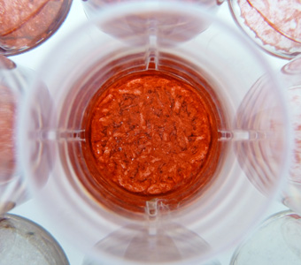
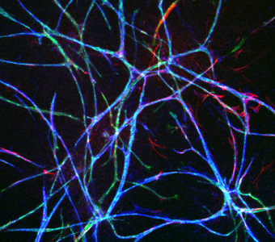

Stem Cell Biology
Stem cells have the unique capacity to differentiate along various lineages. Multiple signals present within the culture environment are integrated into the decision-making machinery to tightly regulate cell fate. Our lab is interested in understanding the complex interactions that enable single cell populations to develop into functional composite tissues. We are developing unique modalities for activating specific pathways with spatial and temporal precision in order to coordinate the differentiation of stem cells along multiple lineages and elucidate the mechanisms of heterotypic cellular interactions. We are also employing engineering approaches to build computational models of these cellular responses.
- Stem cells from adipose tissue: The stromal vascular fraction of cells (SVF) is isolated from lipoaspirate tissue and contains vascular progenitors and adipose-derived stromal/stem cells (ASCs). SVF can be used intraoperatively without the need for in vitro cell manipulation. Our lab investigates the potential for harnessing SVF for craniofacial bone regeneration.
- Induced pluripotent stem cells: To regenerate patient-specific muscle grafts, we are developing strategies for combining our 3D scaffold technologies with myoblasts derived from human induced pluripotent stem cells (hiPSCs) to guide their assembly into contractile muscle tissues. We assess the impact of biochemical and biophysical cues on cell differentiation and tissue maturation and evaluate the functionality of the tissues.


- 

- 